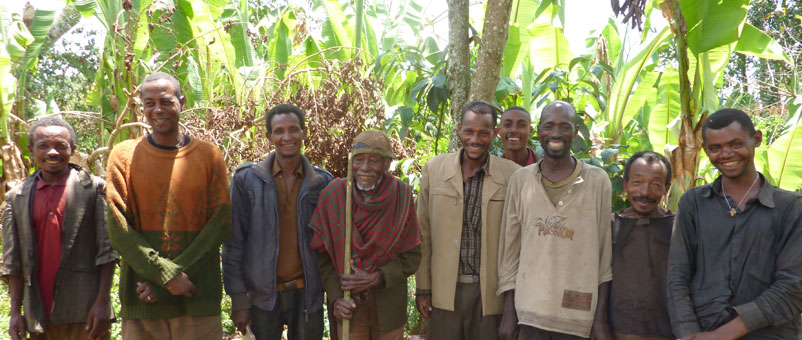

ABC Farmers is a startup agricultural and animal farming company, that has a goal to promote agriculture towards the people of Uganda. We believe that Ugandans have the power to feed themselves and that through the support of smallholders they hold the key to lasting rural prosperity.
We ensure that farmers have the right tools, knowledges, techniques in order to prosper. Our goal is to help starting farmers become self-sufficient and be able to provide for their families. ABC Farmers also provides training on how to add more value to their products as we help them to become business-minded and rural entrepreneurs. Thus, contributing more towards the social and economic benefits to their community, country and maybe the continent.
By connecting local farmers with international agencies we help farmers sell their products, send their children to school and reinvest in their land.
Population: 35 million, Life expectancy: 54 years, Population in rural areas: 86%, People working in agriculture: 82%
Despite Uganda having good soil and favorable weather, there are many barriers preventing poor farmers making the most of the countries growing economy.
